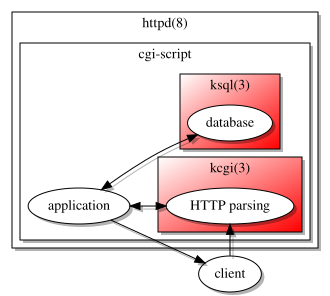
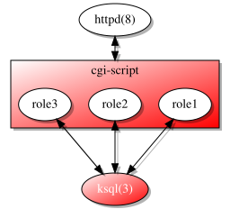
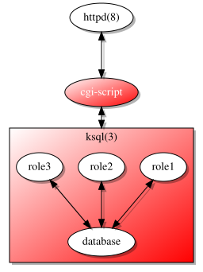
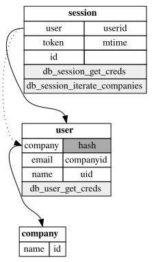

tl;dr openradtool now features a tool for auditing role-based access control enforced by pledge(2). This piece is an abridged version of my AsiaBSDCon 2018 talk.
BCHS: role audits
This article is about web application security.
It can be applied to any application, really, but fits most with those having the concept of a single data source servicing multiple operating roles. For example, most web applications have at least the concept of administrators, registered users, and unregistered users—all of whom at some point act to invoke the application and touch the database. Regular applications usually don't have this ecosystem, hence the focus on web applications.
And of course, it relates to the C programming language, OpenBSD, and SQLite (collectively, BCHS). Conceptually, none of the tools I mention are limited to these systems, but they're the systems I use. Feel free to submit portability patches—and I'd love to have openradtool output into other languages.
To date, I've used ksql+kcgi to protect my applications from the network, then my database from my application. I talk more about database protection in my split-process SQLite article—the network protection has similar principles but no fancy blog posting.

pledge(2) enables these by constraining available resources:
-
Limit the network parsing process so that it can only pass sanitise input over IPC to
the parent (
stdio
orunix
…). -
Limit the database process to only have access to the database (
rpath
,cpath
, …) and manage requests for access over IPC. -
Lastly, limit the application process to IPC (
stdio
) only, keeping its connection to the parse sequence and database.
This only goes so far as to protect me at the broadest application level: I know that I'm safe from bad formats, and that my data is safe from, well, my programming errors. What it doesn't provide is safety within the logical environment of my application. For example, it doesn't guarantee that an unregistered user invoking the application can mess with administrator tables.
Said another way, it doesn't protect the application from sloppy business logic—just sloppy programming. Unfortunately, I do both.
For this, I need more powerful semantics like those of role-based access control (RBAC). I bring in openradtool for this facility, which, beyond hugely simplifying my data layer, features role assignment and provisioning for the data layer of an application. (I discuss this at length in my RBAC article.)

As of version 0.4.6, openradtool pushed its RBAC implementation directly into ksql, taking advantage of the split-process model to ensure that role assignment occured outside the process space of our vulnerable application. Note: openradtool uses the most current versions of ksql+kcgi: they are all developed in tandem. This gives our application a great boon: guarantees about roles.

We might have the strongest protection, but an important question remains: in any sufficiently large application, how can we know which roles can access which data?
introducing roles
Enforcing role-based access control in openradtool is
easy even for existing applications.
Starting with an existing ort(5)
configuration.
This configuration declares the session and user types: a log-in
session and a user entity (principle
) who is logged in.
The session knows about its logged-in user, last modification time (for time-outs), a unique token to prevent session guessing, and its identifier. Sessions may be deleted, created, and queried. The user has an e-mail address, name, hashed password, and identifier. It may also be created, modified, and queried—but not deleted.
Naturally, we document our objects, fields, and operations!
1 struct user { 2 comment "A regular user."; 3 field hash password limit gt 0 4 comment 5 "Password hash. 6 This is passed to inserts and updates as a password, 7 then hashed within the implementation and extracted 8 (in listings and searches) as the hash value."; 9 field email email unique 10 comment "Unique e-mail address."; 11 field name text 12 comment "User's full name."; 13 field uid int rowid; 14 search email,hash: name creds 15 comment 16 "Search for a unique user with their e-mail and 17 password. 18 This is a quick way to verify that a user has entered 19 the correct password for logging in."; 20 search uid: name uid 21 comment "Lookup by unique identifier."; 22 update hash: uid: name hash 23 comment "User updating their password."; 24 update email: uid: name email 25 comment "User updating unique e-mail."; 26 insert; 27 }; 28 29 struct session { 30 comment "Authenticated session."; 31 field user struct userid; 32 field userid:user.uid int 33 comment "Associated user."; 34 field token int 35 comment "Random cookie."; 36 field mtime epoch; 37 field id int rowid; 38 search id, token: name creds 39 comment "Search for logged-in users."; 40 insert; 41 delete id: name id 42 comment "Delete by identifier."; 43 };
We needn't explore all of the generated API, but it suffices to see that this generates structures for all of the types and functions for all operations. All documentation is preserved. See ort-c-header(1) for the nitty-gritty details.
1 #ifndef KWBP_VSTAMP 2 # define KWBP_VSTAMP 10906 3 #endif 4 5 /* 6 * A regular user. 7 */ 8 struct user { 9 /* 10 * Password hash. 11 * This is passed to inserts and updates as a password, 12 * then hashed within the implementation and extracted 13 * (in listings and searches) as the hash value. 14 */ 15 char *hash; 16 /* Unique e-mail address. */ 17 char *email; 18 /* User's full name. */ 19 char *name; 20 int64_t uid; 21 }; 22 23 /* 24 * Authenticated session. 25 */ 26 struct session { 27 struct user user; 28 /* Associated user. */ 29 int64_t userid; 30 /* Random cookie. */
Let's augment our simple example with two user roles: users and administrators. We'll let users… use the system. Administrators will have the ability to add users and nothing more. There's also the concept of the default role, which is in effect when the system starts, before we've actually figured out the operator principle.
1 --- auditing-fig4.conf Sun Mar 11 21:53:17 2018 2 +++ auditing-fig6.conf Sun Mar 11 21:53:17 2018 3 @@ -1,3 +1,10 @@ 4 +roles { 5 + role user 6 + comment "Regular user."; 7 + role admin 8 + comment "Super-user."; 9 +}; 10 + 11 struct user { 12 comment "A regular user."; 13 field hash password limit gt 0 14 @@ -24,6 +31,18 @@ 15 update email: uid: name email 16 comment "User updating unique e-mail."; 17 insert; 18 + roles user { 19 + search uid; 20 + update hash; 21 + update email; 22 + noexport uid; 23 + }; 24 + roles admin { 25 + insert; 26 + }; 27 + roles default { 28 + search creds; 29 + }; 30 }; 31 32 struct session { 33 @@ -40,4 +59,11 @@ 34 insert; 35 delete id: name id 36 comment "Delete by identifier."; 37 + roles user { 38 + insert; 39 + delete id; 40 + }; 41 + roles default { 42 + search creds; 43 + }; 44 };
It's pretty easy to wrap our minds around this. But what happens when our data model grows to dozens of interrelated tables? It's awfully hard to see whether any given role might have indirect access to a table.
The canonical example is the controlling administrator.
Lets say we have an administrator type who's referenced by a company table as the creator of the
row.
Our users are attached to a company, so each time a user object is written, the company is
included in that object.
And thus—the administrator.
But we don't want users to know about administrators!
ort(5) has a
noexport keyword to prevent certain roles from seeing certain information, but what
if we forget? How will we ever know?
Fortunately, there's a tool to make sure this doesn't happen.
auditing roles
Audits are a way for developers, managers, and, well, auditors to trace who has access to what. The ort-audit(1) tool creates these audits on the terminal, as JSON output with ort-audit-json(1), and even GraphViz with ort-audit-gv(1). Let's take a look at our user (and yes, this is from an actual audit run, and real output from the mentioned utilities embedded in this page)…
role name
role documentation
by structure…
Data fields
Data access
Delete functions
Insert functions
Iterate functions
List functions
Search functions
Update functions
by operation…
The audit begins with the role name and its documentation.
It then looks at each object and how it can be accessed by principles of that role.
For example, the uid of the user isn't exported, and access of that field comes
through its search function.
If an object can be indirectly accessed—such as a foreign key reference—all paths
from the referencee to referenced are noted.
Clicking on any field or function produces its documentation.
Below the field layout, we list all operations by category. This is useful for a quick check on the actions allowed by the role.
We can get a quick sense by using the GraphViz output mode, which simply shows all accessable and exportable fields per role. For this, I've slightly expanded the above example by adding another table.
1 --- auditing-fig6.conf Sun Mar 11 21:53:17 2018 2 +++ auditing-fig8.conf Tue Mar 13 00:07:06 2018 3 @@ -5,8 +5,14 @@ 4 comment "Super-user."; 5 }; 6 7 +struct company { 8 + field name text; 9 + field id int rowid; 10 +}; 11 + 12 struct user { 13 comment "A regular user."; 14 + field company struct companyid; 15 field hash password limit gt 0 16 comment 17 "Password hash. 18 @@ -15,6 +21,7 @@ 19 (in listings and searches) as the hash value."; 20 field email email unique 21 comment "Unique e-mail address."; 22 + field companyid:company.id; 23 field name text 24 comment "User's full name."; 25 field uid int rowid; 26 @@ -56,6 +63,7 @@ 27 field id int rowid; 28 search id, token: name creds 29 comment "Search for logged-in users."; 30 + iterate: distinct user.company name companies; 31 insert; 32 delete id: name id 33 comment "Delete by identifier."; 34 @@ -65,5 +73,6 @@ 35 }; 36 roles default { 37 search creds; 38 + iterate companies; 39 }; 40 };
We'll look at the default
role, this time.
Links between objects (the chain of foreign keys
from the original query) are noted with
arrows—the dotted lines are interior links in multi-step foreign key references.
I also show the query functions themselves.
Non-exportable fields are greyed out, as are entirely non-exportable tables.

That's it! We can clearly see the linkage between exported entries.
acknowledgements
I'd like to thank CAPEM Solutions, Inc., for funding this development and agreeing that it bests serves the community as open source. I'd also like to thank AsiaBSDCon for letting me pontificate on these topics at AsiaBSDCon 2018.